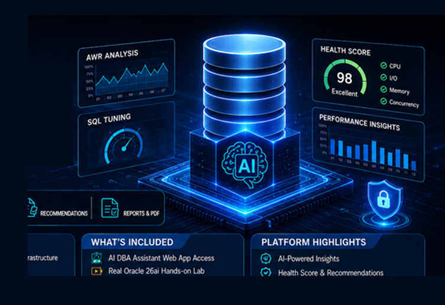
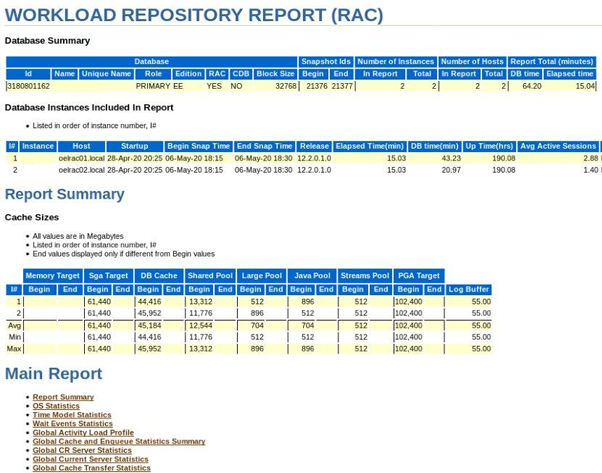

AI DBA Assistant
Intelligent Oracle Database Performance Analysis & Tuning
From AWR data to actionable DBA insights — faster, smarter, and easier.
Product Architect & Developer — AI DBA Assistant

What Is AI DBA Assistant?
An intelligent Oracle database performance analysis platform designed to help DBAs move from raw AWR data to diagnosis, recommendation, and action.
The platform helps DBAs
- Analyze Oracle AWR reports
- Identify database health issues
- Detect performance bottlenecks
- Analyze wait events
- Identify CPU and I/O pressure
- Find top SQL statements
- Analyze SQL performance
- Generate tuning recommendations
- Prioritize DBA actions
- Produce executive-level reports

Performance Analysis
- AWR analysis · health assessment · performance scoring
- Bottleneck detection · wait-event analysis
- CPU, I/O, and memory analysis
SQL Intelligence
- Top SQL identification · SQL performance analysis
- SQL tuning recommendations · SQL statistics
- SQL impact analysis · recommended indexes
Reporting
- Executive dashboard · DBA performance report
- SQL tuning report · PDF export
- AI findings · recommendations
Traditional AWR vs the AI DBA Approach
AWR tells us WHAT happened. The DBA still has to determine WHY it happened and WHAT to do next. AI assists the DBA — it does not replace the DBA.
AWR contains a tremendous amount of information
Common DBA challenges
- Large AWR reports
- Manual investigation
- Multiple sections to correlate
- Difficult to prioritize findings
- Time-consuming SQL analysis
- Repetitive performance investigations
- Expertise required to interpret results
Traditional DBA workflow
AI DBA Assistant
Product Architecture & AWR Analyzer
Upload an Oracle AWR HTML report and let the platform automatically analyze the database.
User / DBA
Web Application
AWR Analysis API
AWR Parser
AI Recommendation Layer
Dashboard + Reports
Performance Analysis Engines
Processing
- Parse AWR sections
- Extract performance metrics
- Analyze database workload
- Detect abnormal conditions
- Identify bottlenecks
- Analyze SQL
- Generate recommendations
Technology stack
Database Health Score & Executive Dashboard
Instead of reading hundreds of pages first, the DBA gets an immediate high-level assessment and a quick view of database performance.
78 / 100 · Start with the weakest areas first
| Area | Status |
|---|---|
| CPU | Healthy |
| Memory | Healthy |
| I/O | Warning |
| Wait Events | Critical |
| SQL Performance | Warning |
| Database Load | Warning |
Performance trend
Visualize CPU vs I/O, DB Time, AAS, and Wait Events.
Bottleneck Detection & Wait Event Intelligence
Analyze workload to identify the major sources of performance pressure, then categorize wait events and explain what they may mean.
Primary bottleneck · I/O
- High physical reads · Increased I/O wait time
- High read latency · Elevated user I/O waits
Secondary bottleneck · SQL
- High DB Time SQL · Excessive logical reads
- Inefficient execution
Result
Instead of giving the DBA 50 possible problems, focus on the 2–3 problems most likely to have the greatest impact.
Wait events analyzed
Typical output vs AI interpretation
db file sequential read — 35%
High single-block read activity may indicate significant index/table access and could warrant investigation of SQL execution plans, indexing, and storage latency.
Top SQL Analysis & SQL Tuning Assistant
Identify SQL contributing most to workload, then explain the problem, evidence, possible cause, and recommended next steps.
Problem
What makes this SQL expensive?
Evidence
Which metrics indicate the problem?
Possible cause
- Missing index · Excessive logical reads
- Full table scan · Poor selectivity
- High execution frequency
- Inefficient join · Plan instability
Recommendation
Potential tuning actions for DBA review — not automatic production changes.
Index Recommendations & AI-Powered Findings
The system converts raw performance metrics into understandable findings. Index recommendations are advisory.
Example · SQL ID abc123xyz
- High logical reads · High elapsed time
- Large table access · Frequent execution
Evaluate whether an index on the frequently filtered or joined columns could reduce unnecessary data access.
DBA must validate
- Data distribution
- Existing indexes
- DML impact
- Execution plan
- Application behavior
- Production workload
Finding #1 — High I/O Pressure
Severity: CriticalEvidence
- High physical reads
- Elevated I/O wait time
- High-impact SQL contributing to disk activity
Potential cause
Inefficient data access patterns.
Recommended action
Investigate top I/O-consuming SQL and execution plans.
From Findings → Actions & Performance Report
Instead of simply saying “Performance issue detected,” the assistant walks the DBA from finding to a validated action — then produces a structured report for DBAs and management.
High DB Time
Top SQL contributes significant DB Time
Review SQL execution plan
Indexing / rewrite / access path
Validate before production
Executive summary
- Overall database health
- Major findings
- Critical issues
Performance analysis
- CPU · Memory · I/O
- Wait events
- Database load
SQL analysis
- Top SQL
- Expensive SQL
- SQL recommendations
DBA recommendations
- Priority · Finding
- Evidence
- Suggested action
Executive Summary
Database Health Score
Performance KPIs
Bottleneck Analysis
Wait Event Analysis
Top SQL
SQL Tuning Recommendations
Index Recommendations
AI Findings
DBA Action Plan
Demo Workflow & Example DBA Scenario
Traditional approach
DBA manually investigates:
AI DBA Assistant
Upload AWR. The system identifies:
Why AI DBA Assistant = DBA Copilot
The platform is designed to assist DBAs throughout the performance investigation lifecycle.
Traditional monitoring tools
Primarily answer: “What is happening?”
AI DBA Assistant attempts to answer
- What is happening?
- Why might it be happening?
- Where should I investigate?
- Which SQL deserves attention?
- What action should the DBA consider?
DBA
Experience + Judgment + Production Knowledge
AI
Pattern Recognition + Correlation + Summarization + Recommendations
Together
Faster performance investigation
Future Enhancements
Phase 1 — Current
- AWR Analyzer
- Database Health Score
- Bottleneck Analysis
- Wait Event Analysis
- Top SQL
- SQL Tuning
- AI Findings
- Recommendations
- PDF Reports
Phase 2
- Real-time database monitoring
- OEM integration
- Oracle Cloud integration
- Historical performance comparison
- Performance anomaly detection
- Automated trend analysis
Phase 3
- Predictive performance analytics
- AI-powered incident investigation
- Natural-language DBA assistant
- “Ask your database” interface
- Automated root-cause investigation
- Enterprise DBA knowledge base
Ask Your Database · Enterprise Vision · Business Value
Capabilities could include
Reduce investigation time
Automate repetitive analysis.
Improve response time
Identify important performance indicators faster.
Standardize analysis
Create a consistent performance-analysis methodology.
Improve knowledge sharing
Convert DBA expertise into reusable analysis rules and recommendations.
Enable AI adoption
Introduce practical AI capabilities into the database engineering environment.
Better decisions
Give DBAs evidence, priority, and a clear next action.
Key Takeaways & Thank You
Oracle AWR Reports
Health & Workload
Bottlenecks & SQL
Potential Issues
DBA Actions
Executive & Technical
“Turn database performance data into actionable DBA intelligence.”
Product Architect & Developer — AI DBA Assistant
Intelligent Oracle Database Performance Analysis & Tuning